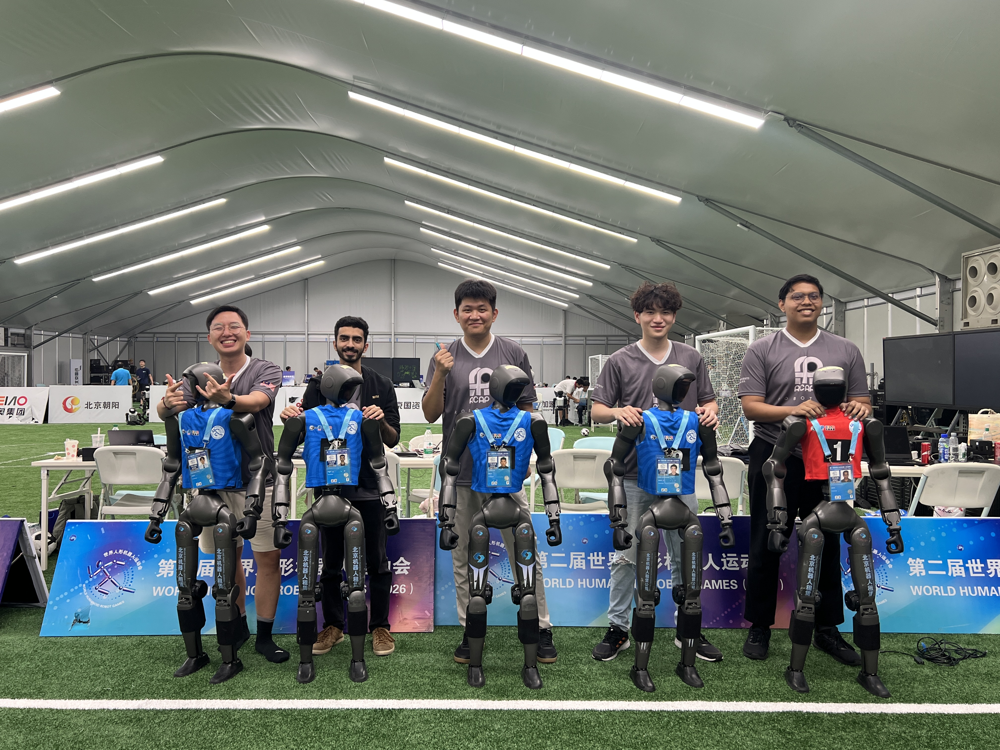
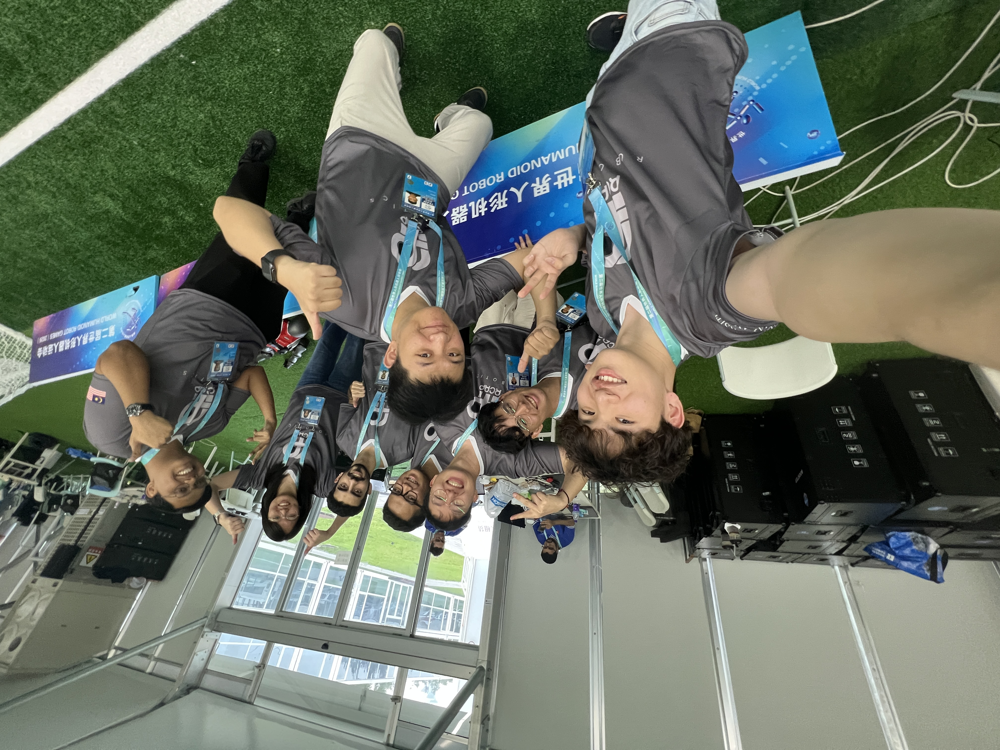

Following a match state through the system.
Robot soccer connects perception, behavior selection, motion, and external match control. My work focused on investigating how these interfaces interact, reviewing behavior logic, and documenting technical findings.
Scope: interface investigation, behavior review, and research formulation.
One match. Different state transitions.
When match states disagree
Why could a controller interface show a new match state while robot behavior still reflected the previous one? I investigated differences between GameController versions using timestamped logs and source-code comparisons.
Tracing the mismatch
I compared the controller’s internal state with the state sent to robots, checked timing options, and wrote a repeatable comparison procedure to examine interface and version compatibility.
Understanding action switching.
I reviewed goalkeeper behavior arbitration: how configuration thresholds, per-tick decisions, and stateful kick actions interact. The analysis followed the decision path beyond the behavior-tree diagram into the action lifecycle.
I wrote review notes on overlapping conditions, action interruptions, restart costs and configuration dependencies, with recommendations tied to the code paths I examined.
What should robots share?
Exploratory research · Evaluation pendingThe same coordination question appears in robot soccer and UAV swarms: what should robots share when communication is limited? I am exploring whether predictive state sharing could help.
Work so far includes problem formulation and evaluation design. The next step is empirical validation.
